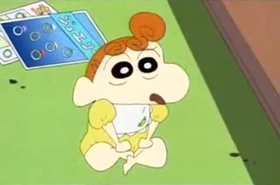

Mitsy Nohara
Misae Nohara (née Koyama) (野原みさえ), Mitsy Nohara in the Vitello, Phuuz and Dutch dubs, is the mother of the Nohara family, and its caretaker. She is 29 years old but she always tells people that she is 24 or 25. She is the classical housewife of post-war Japan - she cleans, launders, cooks, sews, mothers, and lazes all to varying degrees of success.
Harry Nohara
Hiroshi Nohara (野原ひろし) (35 years old), Harry Nohara in the Vitello, Phuuz and Dutch dubs, is the father of the Nohara family, and its sole source of income as he works at as kakarichô (a low-level manager) at Futaba Shoji where he does overtime to earn a little more money and because of the 32-year mortgage he still has to pay.

Himawari Nohara
Himawari Nohara (野原ひまわり), Daisy Nohara in the Vitello, Phuuz and Dutch dubs, is the youngest child of the Nohara family, born on September 27 of 1996 (the date of the special episode in which she was born). She is a precocious and vibrant infant. While technically newborn, her character has matured and grown more intelligent during her stay in the series.
Shiro
Shiro (シロShiro), Lucky in the Vitello, Phuuz and Dutch dubs, and Whitey in the Funimation and LUK Internacional dubs, is a white (Shiro means white) pup Shin-chan found in a cardboard box in episode 7b (I found a Puppy). While he is a beloved member of the family, he is the subject of neglect thanks to his owner's forgetfulness and short attention-span. He is a very intelligent dog,